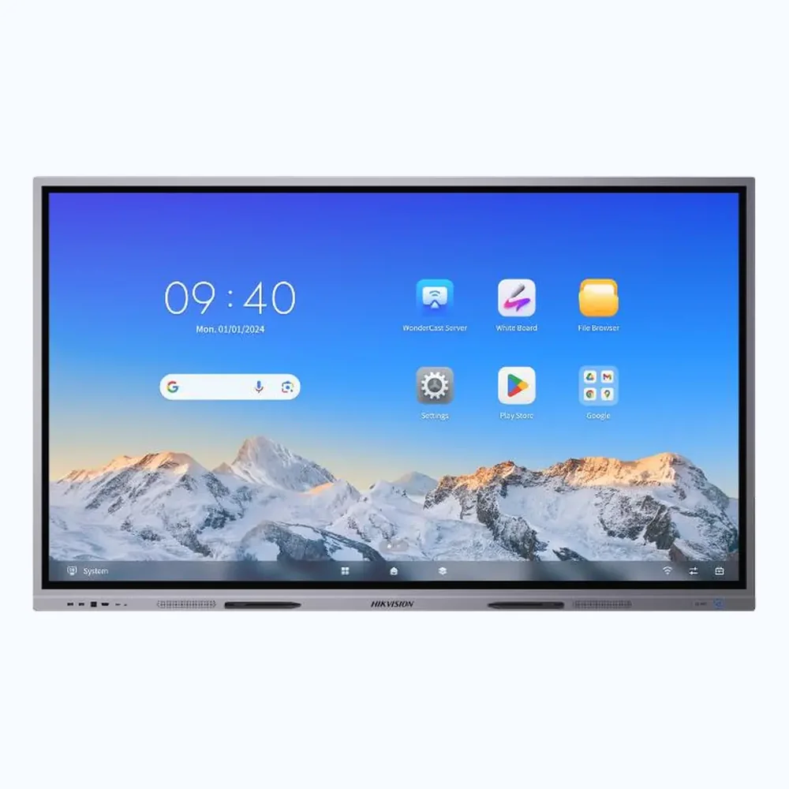
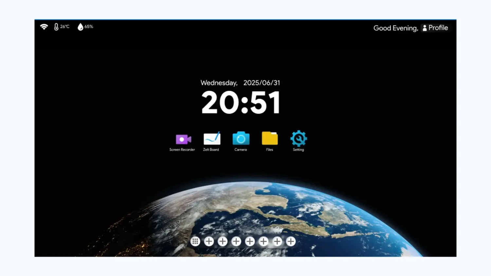

01 / Product spotlight
Produk yang Patut Dikenal
Perangkat pilihan dari koleksi situs kami. Label NEW menandai sorotan baru di halaman ini, bukan klaim tanggal peluncuran merek.
 PRODUCT SPOTLIGHT
PRODUCT SPOTLIGHT
NEW Samsung / Interactive Display
Samsung WAD: Satu Layar untuk Ide yang Lebih Besar
Saat presentasi perlu lebih dari sekadar menampilkan slide, layar interaktif membantu tim menandai materi, berdiskusi, dan mengembangkan gagasan bersama.
Samsung Interactive Display seri WAD menjadi salah satu pilihan untuk ruang kelas, ruang rapat, hingga kegiatan pelatihan. Sesuaikan ukuran layar, kebutuhan perangkat pendukung, serta tata letak ruang sebelum memilih unit.
Jelajahi produk Samsung ↗

NEW Hikvision / Smart Board
Hikvision Ultra Series, Lebih Praktis untuk Kelas dan Meeting
Tampilan visual menjadi lebih terarah ketika materi dan diskusi dapat disatukan pada satu panel interaktif.
Saat membandingkan Smart Board, pertimbangkan kebutuhan penggunaan harian: kualitas tampilan, koneksi ke laptop, penggunaan whiteboard, dan dukungan setelah pembelian. Seri Hikvision dapat menjadi salah satu pilihan untuk dievaluasi.
Lihat lini Hikvision ↗

NEW ZELT / Interactive Display
ZELT Pro, Alternatif untuk Ruang yang Aktif Berkolaborasi
Ruang belajar dan ruang kerja modern membutuhkan tampilan yang nyaman dilihat bersama.
ZELT Pro dapat dipertimbangkan untuk berbagi materi, menjelaskan konsep, dan mencatat ide. Sebelum menentukan pilihan, periksa ketersediaan ukuran serta kelengkapan yang sesuai dengan kebutuhan instalasi.
Lihat pilihan ZELT ↗